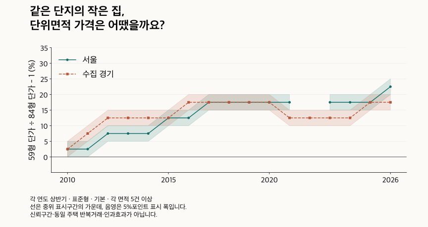

단지 조건 비교 · 전용면적당 가격
같은 단지 59형·84형, 평당가는 어느 쪽이 높을까?
같은 단지 59형과 84형의 전용면적당 가격을 비교합니다. 지역·연식·가격대별 차이, 계약월·층을 맞춘 결과와 총액 부담이 다른 이유를 확인하세요.
분석 기간 · 2010~2026년 반기·같은 1~3월/7~9월 · 끝월 잠정 | 자료 기준일 · 거래 2026-10-04
같은 단지에서 59형과 84형을 비교하면, 총액이 더 낮은 집의 단위면적 가격이 더 높을 수 있습니다. 2026년 상반기 공통 거래 단지를 하나씩 같은 비중으로 비교한 결과, 59형의 전용㎡당 가격이 84형보다 높은 정도의 중위는 서울 20~25%, 수집 경기 15~20% 구간이었습니다. 다만 모든 단지와 시기에 같은 방향이 나타난 것은 아닙니다.
‘같은 단지 평당가’는 어떻게 계산했나요?
먼저 각 계약의 신고 총액을 그 계약의 실제 소수점 전용면적(㎡)으로 나눕니다. 같은 단지·같은 기간·같은 면적형에서 단가의 중위값을 구한 뒤, 59형 단가 ÷ 84형 단가 − 1을 백분율로 계산합니다. 마지막으로 단지마다 한 표씩 주어 이 비율의 분포를 봅니다. 지역의 총액 중위값을 59나 84로 나눠 비교한 값과는 다릅니다.
비율이 양수이면 59형의 전용면적당 가격이 높고, 음수이면 84형이 높습니다. 전용㎡당 가격을 전용평당 가격으로 바꿀 때는 양쪽에 같은 환산상수가 곱해지므로 비율이 같습니다. 공급면적의 24평·34평을 대신 넣지는 않았습니다.
이 글의 표준 59형은 전용면적을 평으로 환산해 반올림한 17·18평형, 84형은 25·26평형입니다. 정확히 전용 59㎡ 이상 60㎡ 미만과 84㎡ 이상 85㎡ 미만인 좁은 면적대도 따로 비교했습니다. 특정 단지의 상품명이나 공급면적과 같다고 가정하지 않습니다. 면적 선택을 바꾸면 표본도 달라진다는 점은 아파트 면적 용어와 함께 확인하세요.
이하 비율은 5%포인트 폭의 구간으로 읽습니다. 양 끝을 포함해 보수적으로 비교하며, 0에 닿는 구간은 방향을 확정하지 않습니다. 20~25%는 정확히 22.5%라는 뜻도, 통계적 신뢰구간도 아닙니다. 하위·상위 25% 경계는 단지별 비율의 가운데 절반을 보는 기준이지 최저·최고 단지의 값이 아닙니다.
두 면적이 모두 거래된 단지만 남기면 무엇이 달라지나요?
같은 기간에 두 면적이 각각 5건 이상 거래된 단지를 공통 표본으로 삼았습니다. 지역 요약은 공통 단지 10곳 이상, 두 면적 각각 40계약 이상에서만 표시합니다. 각 면적 10건 이상으로 강화한 비교도 남겼습니다. 거래가 적어 비교할 수 없는 단지가 해당 면적의 집을 보유하지 않았다는 뜻은 아닙니다.
2026년 상반기 서울에서 공통 단지에 들어온 거래의 비중은 59형 40~50%, 84형 30~40%입니다. 수집 경기에서는 각각 40~50%, 20~30%입니다. 주택 재고 전체의 비중이 아니라, 해당 면적형의 적격 거래 중 포함된 거래 비중입니다. 잘 거래되는 두 면적을 갖춘 단지로 표본이 좁아지는 한계를 함께 봐야 합니다.
| 지역 | 하위 25% 경계 | 중위 | 상위 25% 경계 | 59형 거래 포함률 | 84형 거래 포함률 |
|---|---|---|---|---|---|
| 서울 | 15~20 | 20~25 | 25~30 | 40~50 | 30~40 |
| 수집 경기 | 10~15 | 15~20 | 20~25 | 40~50 | 20~30 |
기본 집계는 관측된 해제·직거래 표시가 있는 계약도 포함하는 공통 정제입니다. 별도 제외 집계는 그 표시가 있는 계약을 뺍니다. 과거의 빈 표시는 정상 거래가 확인됐다는 뜻이 아닙니다. 토지임대부는 제외했습니다. 최근 계약과 2026년 9월은 이후 정정될 수 있는 잠정 자료입니다.
면적·정제·최소표본16조건 펼치기
| 지역 | 면적 선택 | 정제 | 각 면적 최소 거래 | 중위 | 방향 |
|---|---|---|---|---|---|
| 서울 | 표준형 | 기본 | 5건 | 20~25 | 59형 높음 |
| 서울 | 표준형 | 기본 | 10건 | 25~30 | 59형 높음 |
| 서울 | 표준형 | 표시 해제·직거래 제외 | 5건 | 20~25 | 59형 높음 |
| 서울 | 표준형 | 표시 해제·직거래 제외 | 10건 | 25~30 | 59형 높음 |
| 서울 | 좁은 59/84㎡대 | 기본 | 5건 | 20~25 | 59형 높음 |
| 서울 | 좁은 59/84㎡대 | 기본 | 10건 | 25~30 | 59형 높음 |
| 서울 | 좁은 59/84㎡대 | 표시 해제·직거래 제외 | 5건 | 20~25 | 59형 높음 |
| 서울 | 좁은 59/84㎡대 | 표시 해제·직거래 제외 | 10건 | 25~30 | 59형 높음 |
| 수집 경기 | 표준형 | 기본 | 5건 | 15~20 | 59형 높음 |
| 수집 경기 | 표준형 | 기본 | 10건 | 15~20 | 59형 높음 |
| 수집 경기 | 표준형 | 표시 해제·직거래 제외 | 5건 | 15~20 | 59형 높음 |
| 수집 경기 | 표준형 | 표시 해제·직거래 제외 | 10건 | 15~20 | 59형 높음 |
| 수집 경기 | 좁은 59/84㎡대 | 기본 | 5건 | 15~20 | 59형 높음 |
| 수집 경기 | 좁은 59/84㎡대 | 기본 | 10건 | 15~20 | 59형 높음 |
| 수집 경기 | 좁은 59/84㎡대 | 표시 해제·직거래 제외 | 5건 | 15~20 | 59형 높음 |
| 수집 경기 | 좁은 59/84㎡대 | 표시 해제·직거래 제외 | 10건 | 15~20 | 59형 높음 |
작은 집의 단가가 항상 더 높았나요?
최근 광역 요약만으로 모든 지역과 과거 시기를 설명할 수는 없습니다. 분당구의 2010년 하반기와 2011년 상반기에는 표준형·기본·각 5건 조건의 중위비율 차이가 −15~−10% 구간이었습니다. 이 표본에서는 84형의 단가가 더 높았습니다. 지역 이름이나 면적만으로 방향을 고정하면 놓치는 반례입니다.
| 기간 | 하위 25% 경계 | 중위 | 상위 25% 경계 | 방향 |
|---|---|---|---|---|
| 2010년 하반기 | -20~-15 | -15~-10 | -5~0 | 84형 높음 |
| 2011년 상반기 | -15~-10 | -15~-10 | -10~-5 | 84형 높음 |
다음 도표와 표는 같은 상반기를 나란히 놓습니다. 매년 거래되는 단지와 집이 달라지므로 동일 주택의 반복 거래 추세는 아닙니다. 서울과 수집 경기의 범위에는 지역별 표가 겹쳐 들어가므로 서로 더하지 않습니다. 표본이 부족한 시기는 선을 끊고 비교 유보로 남겼습니다.

| 기간 | 서울 | 수집 경기 |
|---|---|---|
| 2010년 상반기 | 0~5 | 0~5 |
| 2011년 상반기 | 0~5 | 5~10 |
| 2012년 상반기 | 5~10 | 10~15 |
| 2013년 상반기 | 5~10 | 10~15 |
| 2014년 상반기 | 5~10 | 10~15 |
| 2015년 상반기 | 10~15 | 10~15 |
| 2016년 상반기 | 10~15 | 15~20 |
| 2017년 상반기 | 15~20 | 15~20 |
| 2018년 상반기 | 15~20 | 15~20 |
| 2019년 상반기 | 15~20 | 15~20 |
| 2020년 상반기 | 15~20 | 15~20 |
| 2021년 상반기 | 15~20 | 10~15 |
| 2022년 상반기 | 비교 유보 | 10~15 |
| 2023년 상반기 | 15~20 | 10~15 |
| 2024년 상반기 | 15~20 | 10~15 |
| 2025년 상반기 | 15~20 | 15~20 |
| 2026년 상반기 | 20~25 | 15~20 |
하반기와2026부분기간 펼치기
| 기간 | 서울 | 수집 경기 |
|---|---|---|
| 2010년 하반기 | 0~5 | 0~5 |
| 2011년 하반기 | 5~10 | 5~10 |
| 2012년 하반기 | 5~10 | 10~15 |
| 2013년 하반기 | 10~15 | 10~15 |
| 2014년 하반기 | 10~15 | 10~15 |
| 2015년 하반기 | 10~15 | 15~20 |
| 2016년 하반기 | 15~20 | 15~20 |
| 2017년 하반기 | 15~20 | 15~20 |
| 2018년 하반기 | 15~20 | 15~20 |
| 2019년 하반기 | 15~20 | 15~20 |
| 2020년 하반기 | 15~20 | 10~15 |
| 2021년 하반기 | 15~20 | 15~20 |
| 2022년 하반기 | 비교 유보 | 10~15 |
| 2023년 하반기 | 15~20 | 10~15 |
| 2024년 하반기 | 15~20 | 15~20 |
| 2025년 하반기 | 20~25 | 15~20 |
| 2026년 7~9월 * | 25~30 | 15~20 |
같은1~3월 비교 펼치기
| 기간 | 서울 | 수집 경기 |
|---|---|---|
| 2010년 1~3월 | 0~5 | 0~5 |
| 2011년 1~3월 | 0~5 | 5~10 |
| 2012년 1~3월 | 5~10 | 10~15 |
| 2013년 1~3월 | 5~10 | 10~15 |
| 2014년 1~3월 | 5~10 | 10~15 |
| 2015년 1~3월 | 10~15 | 10~15 |
| 2016년 1~3월 | 10~15 | 15~20 |
| 2017년 1~3월 | 15~20 | 15~20 |
| 2018년 1~3월 | 15~20 | 15~20 |
| 2019년 1~3월 | 비교 유보 | 15~20 |
| 2020년 1~3월 | 15~20 | 15~20 |
| 2021년 1~3월 | 15~20 | 5~10 |
| 2022년 1~3월 | 비교 유보 | 비교 유보 |
| 2023년 1~3월 | 15~20 | 10~15 |
| 2024년 1~3월 | 15~20 | 10~15 |
| 2025년 1~3월 | 15~20 | 15~20 |
| 2026년 1~3월 | 20~25 | 15~20 |
같은7~9월 비교 펼치기
| 기간 | 서울 | 수집 경기 |
|---|---|---|
| 2010년 7~9월 | 0~5 | 0~5 |
| 2011년 7~9월 | 5~10 | 5~10 |
| 2012년 7~9월 | 5~10 | 10~15 |
| 2013년 7~9월 | 5~10 | 10~15 |
| 2014년 7~9월 | 5~10 | 10~15 |
| 2015년 7~9월 | 10~15 | 10~15 |
| 2016년 7~9월 | 15~20 | 15~20 |
| 2017년 7~9월 | 15~20 | 15~20 |
| 2018년 7~9월 | 15~20 | 15~20 |
| 2019년 7~9월 | 15~20 | 15~20 |
| 2020년 7~9월 | 15~20 | 10~15 |
| 2021년 7~9월 | 15~20 | 10~15 |
| 2022년 7~9월 | 비교 유보 | 비교 유보 |
| 2023년 7~9월 | 15~20 | 10~15 |
| 2024년 7~9월 | 15~20 | 15~20 |
| 2025년 7~9월 | 20~25 | 15~20 |
| 2026년 7~9월 * | 25~30 | 15~20 |
2026년 하반기 표는 7~9월만 담았습니다. 과거의 완전한 하반기와 기간 길이가 다르므로, 최근을 비교하려면 별도의 같은 7~9월 표를 보세요. 1~3월도 별도로 제공합니다. 반기와 그 안의 분기는 계약이 겹치며 독립된 사례가 아닙니다.
전체61지역의 최근 비교와 유보 펼치기
| 지역 | 하위 25% 경계 | 중위 | 상위 25% 경계 | 중위 방향 |
|---|---|---|---|---|
| 종로구 | 비교 유보 | 비교 유보 | 비교 유보 | 비교 유보 |
| 중구 | 비교 유보 | 비교 유보 | 비교 유보 | 비교 유보 |
| 용산구 | 비교 유보 | 비교 유보 | 비교 유보 | 비교 유보 |
| 성동구 | 20~25 | 25~30 | 25~30 | 59형 높음 |
| 광진구 | 비교 유보 | 비교 유보 | 비교 유보 | 비교 유보 |
| 동대문구 | 20~25 | 25~30 | 30~35 | 59형 높음 |
| 중랑구 | 10~15 | 15~20 | 20~25 | 59형 높음 |
| 성북구 | 20~25 | 25~30 | 25~30 | 59형 높음 |
| 강북구 | 25~30 | 25~30 | 25~30 | 59형 높음 |
| 도봉구 | 비교 유보 | 비교 유보 | 비교 유보 | 비교 유보 |
| 노원구 | 0~5 | 10~15 | 15~20 | 59형 높음 |
| 은평구 | 20~25 | 25~30 | 25~30 | 59형 높음 |
| 서대문구 | 20~25 | 25~30 | 25~30 | 59형 높음 |
| 마포구 | 비교 유보 | 비교 유보 | 비교 유보 | 비교 유보 |
| 양천구 | 비교 유보 | 비교 유보 | 비교 유보 | 비교 유보 |
| 강서구 | 20~25 | 20~25 | 25~30 | 59형 높음 |
| 구로구 | 15~20 | 20~25 | 25~30 | 59형 높음 |
| 금천구 | 비교 유보 | 비교 유보 | 비교 유보 | 비교 유보 |
| 영등포구 | 25~30 | 25~30 | 25~30 | 59형 높음 |
| 동작구 | 20~25 | 25~30 | 30~35 | 59형 높음 |
| 관악구 | 20~25 | 25~30 | 30~35 | 59형 높음 |
| 서초구 | 비교 유보 | 비교 유보 | 비교 유보 | 비교 유보 |
| 강남구 | 비교 유보 | 비교 유보 | 비교 유보 | 비교 유보 |
| 송파구 | 20~25 | 20~25 | 25~30 | 59형 높음 |
| 강동구 | 20~25 | 25~30 | 25~30 | 59형 높음 |
| 수원시 장안구 | 10~15 | 15~20 | 20~25 | 59형 높음 |
| 수원시 권선구 | 10~15 | 10~15 | 15~20 | 59형 높음 |
| 수원시 팔달구 | 비교 유보 | 비교 유보 | 비교 유보 | 비교 유보 |
| 수원시 영통구 | 15~20 | 15~20 | 15~20 | 59형 높음 |
| 성남시 수정구 | 비교 유보 | 비교 유보 | 비교 유보 | 비교 유보 |
| 성남시 중원구 | 20~25 | 25~30 | 30~35 | 59형 높음 |
| 성남시 분당구 | 10~15 | 15~20 | 15~20 | 59형 높음 |
| 의정부시 | 5~10 | 10~15 | 15~20 | 59형 높음 |
| 안양시 만안구 | 15~20 | 15~20 | 25~30 | 59형 높음 |
| 안양시 동안구 | 10~15 | 15~20 | 25~30 | 59형 높음 |
| 부천시 원미구 | 5~10 | 15~20 | 15~20 | 59형 높음 |
| 부천시 소사구 | 비교 유보 | 비교 유보 | 비교 유보 | 비교 유보 |
| 부천시 오정구 | 비교 유보 | 비교 유보 | 비교 유보 | 비교 유보 |
| 광명시 | 20~25 | 25~30 | 25~30 | 59형 높음 |
| 평택시 | 5~10 | 5~10 | 10~15 | 59형 높음 |
| 안산시 상록구 | 비교 유보 | 비교 유보 | 비교 유보 | 비교 유보 |
| 안산시 단원구 | 10~15 | 10~15 | 20~25 | 59형 높음 |
| 고양시 덕양구 | 비교 유보 | 비교 유보 | 비교 유보 | 비교 유보 |
| 고양시 일산동구 | 비교 유보 | 비교 유보 | 비교 유보 | 비교 유보 |
| 고양시 일산서구 | 비교 유보 | 비교 유보 | 비교 유보 | 비교 유보 |
| 과천시 | 비교 유보 | 비교 유보 | 비교 유보 | 비교 유보 |
| 구리시 | 15~20 | 20~25 | 20~25 | 59형 높음 |
| 남양주시 | 5~10 | 15~20 | 20~25 | 59형 높음 |
| 군포시 | 비교 유보 | 비교 유보 | 비교 유보 | 비교 유보 |
| 의왕시 | 20~25 | 25~30 | 25~30 | 59형 높음 |
| 하남시 | 20~25 | 25~30 | 25~30 | 59형 높음 |
| 용인시 처인구 | 5~10 | 10~15 | 15~20 | 59형 높음 |
| 용인시 기흥구 | 10~15 | 15~20 | 20~25 | 59형 높음 |
| 용인시 수지구 | 20~25 | 25~30 | 30~35 | 59형 높음 |
| 파주시 | 5~10 | 15~20 | 20~25 | 59형 높음 |
| 김포시 | 비교 유보 | 비교 유보 | 비교 유보 | 비교 유보 |
| 화성시 만세구 | 비교 유보 | 비교 유보 | 비교 유보 | 비교 유보 |
| 화성시 효행구 | 비교 유보 | 비교 유보 | 비교 유보 | 비교 유보 |
| 화성시 병점구 | 15~20 | 15~20 | 20~25 | 59형 높음 |
| 화성시 동탄구 | 10~15 | 15~20 | 20~25 | 59형 높음 |
| 광주시 | 15~20 | 20~25 | 20~25 | 59형 높음 |
비교 유보는 가격이 같거나 거래가 전혀 없다는 뜻이 아닙니다. 관측 또는 표본 조건이 부족한 경우를 나누어 노출하지 않았습니다. 구간이 0을 포함하는 ‘방향 유보’도 차이 없음을 확정한 판정은 아닙니다.
같은 단지여도 계약월과 층이 다르면 비교가 달라지지 않을까요?
맞습니다. 이것이 가장 중요한 반론입니다. 같은 단지 안에서도 큰 집과 작은 집의 동·향·평면·상태·층·계약 시기가 다를 수 있습니다. 그래서 두 면적이 모두 거래된 공통 월, 알려진 같은 신고층 구간, 월과 층을 함께 맞춘 조건을 추가했습니다. 동·향·상태까지 같은 집을 비교한 것은 아닙니다.
조건을 더하면 남는 단지도 바뀝니다. 추가 조건의 결과를 원래 전체 공통 단지와 바로 빼면 표본 변화와 조건 차이가 섞입니다. 아래는 추가 조건으로 선택된 같은 단지들의 기본값과 조건을 적용한 값을 나란히 보여줍니다. 단지별 변화 중위는 각 단지에서 추가값−기본값을 먼저 계산한 값이며, 두 중위값을 뺀 결과와 다릅니다.
| 지역 | 조건 | 선택단지 기본 중위(%) | 추가조건 중위(%) | 단지별 변화 중위(%p) | 기본단지 중 선택 비중(%) |
|---|---|---|---|---|---|
| 서울 | 공통 월·거래별 | 25~30 | 20~25 | 0~5 | 70~80 |
| 서울 | 공통 월·월 동일 비중 | 25~30 | 20~25 | 0~5 | 70~80 |
| 서울 | 공통 층구간·구간 동일 비중 | 25~30 | 25~30 | 0~5 | 30~40 |
| 서울 | 공통 월×층·거래별 | 25~30 | 25~30 | 0~5 | 40~50 |
| 서울 | 공통 월×층·조합 동일 비중 | 25~30 | 25~30 | 0~5 | 40~50 |
| 수집 경기 | 공통 월·거래별 | 15~20 | 15~20 | 0~5 | 80~90 |
| 수집 경기 | 공통 월·월 동일 비중 | 15~20 | 15~20 | -5~0 | 80~90 |
| 수집 경기 | 공통 층구간·구간 동일 비중 | 15~20 | 15~20 | -5~0 | 40~50 |
| 수집 경기 | 공통 월×층·거래별 | 15~20 | 15~20 | 0~5 | 50~60 |
| 수집 경기 | 공통 월×층·조합 동일 비중 | 15~20 | 15~20 | -5~0 | 50~60 |
2026년 상반기 공통 월 조건은 서울 기본 단지의 70~80%, 수집 경기의 80~90%를 남깁니다. 월과 층을 함께 맞추면 각각 40~50%, 50~60% 구간으로 줄어듭니다. 이 비중의 분모는 앞의 거래 포함률과 달리 기본 공통 단지 수입니다.
공통 월·거래별 비교에서 서울의 선택단지 기본 중위는 25~30%, 추가 조건 중위는 20~25%입니다. 끝점이 겹치므로 두 중위의 감소 방향을 확정하지 않습니다. 단지별 변화 중위도 0~5%포인트로 0에 닿습니다. 수집 경기의 같은 비교는 기본·추가 모두 15~20% 구간입니다. 표시 구간이 같다고 개별 단지의 변화가 모두 0인 것도 아닙니다.
공통 월은 두 면적이 모두 거래된 달이 두 달 이상이고 선택된 거래가 각 5건 이상이어야 합니다. ‘월 동일 비중’은 거래가 많은 달에만 비중이 몰리지 않도록 달별 비율을 같은 비중으로 비교합니다. 알려진 같은 층구간은 그 구간 안에서 각 5건을 요구하며, 층구간 동일 비중은 해당 단지의 표본이 충분한 구간을 요약합니다. 월×층은 알려진 공통 월·층 조합, 두 달 이상, 각 5건 이상을 유지합니다. 미상층은 같은 층으로 취급하지 않습니다.
알려진 신고층7구간의 비교 펼치기
| 지역 | 층 구간 | 선택단지 기본 중위 | 같은층구간 중위 | 단지별 변화 중위(%p) |
|---|---|---|---|---|
| 서울 | 지하 | 비교 유보 | 비교 유보 | 비교 유보 |
| 서울 | 1층 | 비교 유보 | 비교 유보 | 비교 유보 |
| 서울 | 2층 | 비교 유보 | 비교 유보 | 비교 유보 |
| 서울 | 3층 | 비교 유보 | 비교 유보 | 비교 유보 |
| 서울 | 4~10층 | 25~30 | 25~30 | 0~5 |
| 서울 | 11~20층 | 25~30 | 25~30 | 0~5 |
| 서울 | 21층 이상 | 비교 유보 | 비교 유보 | 비교 유보 |
| 수집 경기 | 지하 | 비교 유보 | 비교 유보 | 비교 유보 |
| 수집 경기 | 1층 | 비교 유보 | 비교 유보 | 비교 유보 |
| 수집 경기 | 2층 | 비교 유보 | 비교 유보 | 비교 유보 |
| 수집 경기 | 3층 | 비교 유보 | 비교 유보 | 비교 유보 |
| 수집 경기 | 4~10층 | 15~20 | 15~20 | 0~5 |
| 수집 경기 | 11~20층 | 15~20 | 15~20 | 0~5 |
| 수집 경기 | 21층 이상 | 15~20 | 15~20 | -5~0 |
이 조건은 거래된 집의 구성을 일부 맞추는 민감도 비교입니다. 같은 상대층, 같은 동이나 같은 향을 확인한 비교가 아니므로 ‘작은 면적의 순수한 가격 효과’라고 부를 수는 없습니다.
연식과 가격대가 다르면 단가비도 달라지나요?
지역과 기간을 같게 두어도 분포는 다릅니다. 2026년 상반기 수집 경기의 당시 연식 0~4년과 30년 이상 그룹은 중위비율 차이가 각각 10~15% 구간이고, 10~19년과 20~29년은 각각 20~25% 구간입니다. 이 조건에서는 뒤의 두 그룹이 더 높지만, 이를 연식만의 효과나 시간이 흐르며 같은 단지가 이동할 경로로 해석하지 않습니다.
| 지역 | 분류 | 하위 25% 경계 | 중위 | 상위 25% 경계 |
|---|---|---|---|---|
| 서울 | 0~4년 | 15~20 | 20~25 | 25~30 |
| 서울 | 5~9년 | 15~20 | 20~25 | 25~30 |
| 서울 | 10~19년 | 20~25 | 25~30 | 25~30 |
| 서울 | 20~29년 | 15~20 | 20~25 | 25~30 |
| 서울 | 30년 이상 | 10~15 | 20~25 | 25~30 |
| 서울 | 미상 | 비교 유보 | 비교 유보 | 비교 유보 |
| 수집 경기 | 0~4년 | 5~10 | 10~15 | 15~20 |
| 수집 경기 | 5~9년 | 10~15 | 15~20 | 20~25 |
| 수집 경기 | 10~19년 | 15~20 | 20~25 | 25~30 |
| 수집 경기 | 20~29년 | 10~15 | 20~25 | 25~30 |
| 수집 경기 | 30년 이상 | 5~10 | 10~15 | 15~20 |
| 수집 경기 | 미상 | 비교 유보 | 비교 유보 | 비교 유보 |
당시 연식은 계약연도에서 현재 확인되는 준공연도를 뺀 값입니다. 연식 미상은 별도이며 현재 남은 목록을 사용한다는 한계가 있습니다. 같은 연식 안에도 입지·단지 규모·거래된 주택 구성이 다릅니다.
가격대는 그 기간의 84형 총액 중위값으로 단지를 나눴습니다. 서울의 10~15억 원 미만과 15~20억 원 미만 그룹은 중위비율 차이가 25~30% 구간, 20억 원 이상은 20~25% 구간입니다. 끝점이 겹치므로 엄격한 대소를 확정하지 않습니다. 가격대와 비율의 84형 분모가 연결돼 있어 ‘비싼 단지라서 작은 집의 단가가 높다’는 독립적인 원인 설명도 아닙니다.
| 지역 | 분류 | 하위 25% 경계 | 중위 | 상위 25% 경계 |
|---|---|---|---|---|
| 서울 | 5억 원 미만 | 비교 유보 | 비교 유보 | 비교 유보 |
| 서울 | 5~10억 원 미만 | 15~20 | 20~25 | 25~30 |
| 서울 | 10~15억 원 미만 | 20~25 | 25~30 | 30~35 |
| 서울 | 15~20억 원 미만 | 20~25 | 25~30 | 25~30 |
| 서울 | 20억 원 이상 | 10~15 | 20~25 | 20~25 |
| 수집 경기 | 5억 원 미만 | 5~10 | 15~20 | 20~25 |
| 수집 경기 | 5~10억 원 미만 | 10~15 | 15~20 | 20~25 |
| 수집 경기 | 10~15억 원 미만 | 15~20 | 20~25 | 25~30 |
| 수집 경기 | 15~20억 원 미만 | 10~15 | 15~20 | 20~25 |
| 수집 경기 | 20억 원 이상 | 비교 유보 | 비교 유보 | 비교 유보 |
분포를 비교할 때는 중위 한 칸과 함께 하위·상위 25% 경계, 비교 유보를 보세요. 표시할 수 없는 가격대가 있다고 인접 가격대의 값으로 채우지 않았습니다.
갈아타기 총액 차이와 왜 다른 답이 나오나요?
기존 59㎡에서 84㎡로 갈아타는 총액 차이는 노원·강서의 2026년 상반기 좁은 면적대와 표시 해제·직거래 제외 조건을 다룹니다. 이번 글에서 같은 조건을 선택하면 단지별 단가비 차이 중위는 노원 10~15%, 강서 20~25% 구간입니다. 전체 지역·기간을 다루는 주 비교의 표준형·기본 조건과 섞지 마세요.
총액은 면적과 단가가 함께 결정합니다. 작은 집의 단가가 높아도 큰 집의 총액이 더 높을 수 있으며, 실제 필요한 현금에는 매도대금·대출·비용·잔금 날짜가 더해집니다. 또 전체 거래의 중위총액끼리 나눈 비율은 단지별 비율을 하나씩 모은 중위가 아닙니다. 비율이 낮은 면적을 ‘저평가’로 판정하거나 더 유리한 매수라고 권하는 비교는 아닙니다.
관심 단지의 두 면적을 비교할 때 무엇부터 볼까요?
- 면적 기준을 맞추세요. 전용면적과 공급면적을 구분하고 실제 소수점 면적을 확인합니다.
- 총액과 단가를 따로 적으세요. 필요한 가격 차액과 전용면적 한 단위당 가격은 다른 판단 재료입니다.
- 계약 시기·층·동을 확인하세요. 국토교통부 실거래가 공개시스템에서 관심 단지의 같은 기간·면적 사례와 정정 여부를 살펴보고, 내부 상태와 향 등 거래 자료만으로 알 수 없는 조건을 별도로 확인합니다.
- 비교할 거래가 부족하면 결론을 보류하세요. 단지의 대표값이나 광역 비율을 개별 매물의 적정가격으로 바꾸지 않습니다.
자료·계산·표시 방법과 한계 펼치기
국토교통부 아파트 매매 실거래 상세 자료를 현재 단지 목록과 연결해 자체 집계했습니다. 거래 자료 기준일은 2026년 10월 4일이며 분석 기간은 2010년 1월부터 2026년 9월까지입니다. 서울 25구와 수집 경기 36개 시·구를 다룹니다. 현재 지역 경계와 단지 목록을 사용하는 과거 비교이며 전체 주택 재고나 호가가 아닙니다.
각 계약의 총액÷실제 전용㎡를 먼저 계산하고, 단지·기간·면적별 중위 단가의 비율을 구한 뒤 단지마다 같은 비중의 선형 분위로 요약했습니다. 공통 표본·원문 면적·신고층·단가와 조건별 집계는 별도 산술 경로로 대조했습니다. 상반기·하반기와 1~3월·7~9월은 겹치는 기간입니다. 비율을 독립 사례의 확률로 세지 않습니다.
포함률은 10%포인트 구간입니다. 양수 포함·제외 기여가 작으면 가리고, 표본 부족과 관측 없음을 구분하지 않습니다. 90~100%도 정확히 100%라는 뜻이 아닙니다. 표와 원고는 공개 구간만을 사용하며, 개별 단지 식별자·계약 가격·정확 건수는 새 집계 파일에 담지 않았습니다.
기존 공개값과의 관계 및 명시한 일부 건수 조건을 검토했습니다. 모든 기간·가격순서·모형·외부 정보를 결합한 보편적인 재구성 방지 보증은 아닙니다. 표에 담지 않은 전체 기간·지역·면적·정제·최소표본·연식·가격대·추가 조건은 공개 집계 파일(JSON)에 남겼습니다. 원자료나 개별 계약 파일은 아닙니다.
분석·집필: 파파펭귄 (Nobot Kang). 에이전트로 원천·독립 산술·공개 표현 검토와 편집을 보조했습니다. 공식 자료 안내는 2026년 10월 17일 확인했습니다.